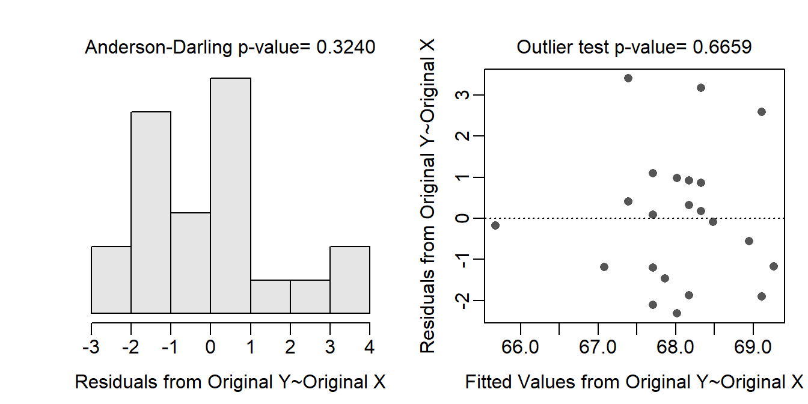
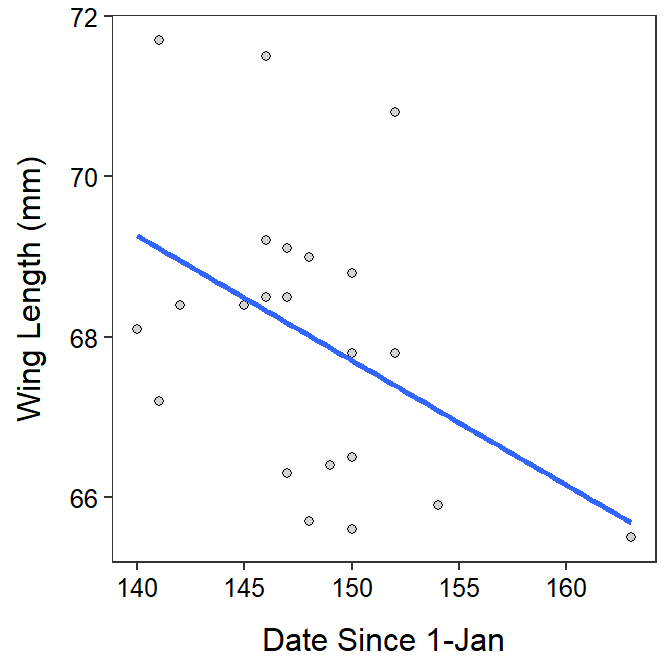
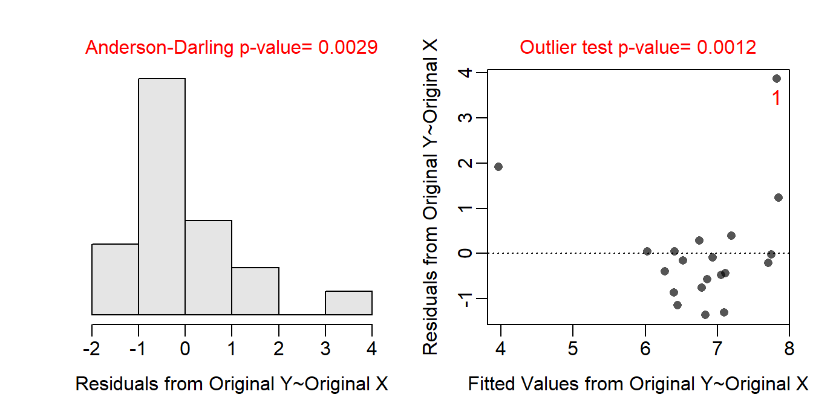
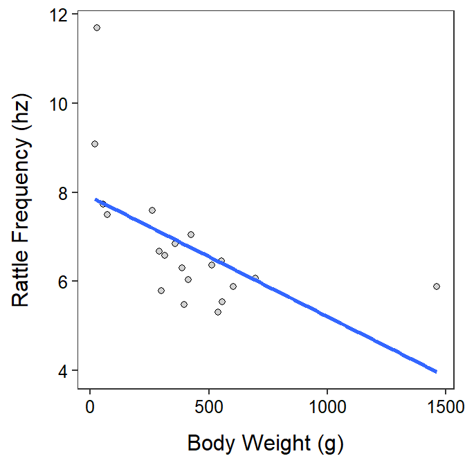
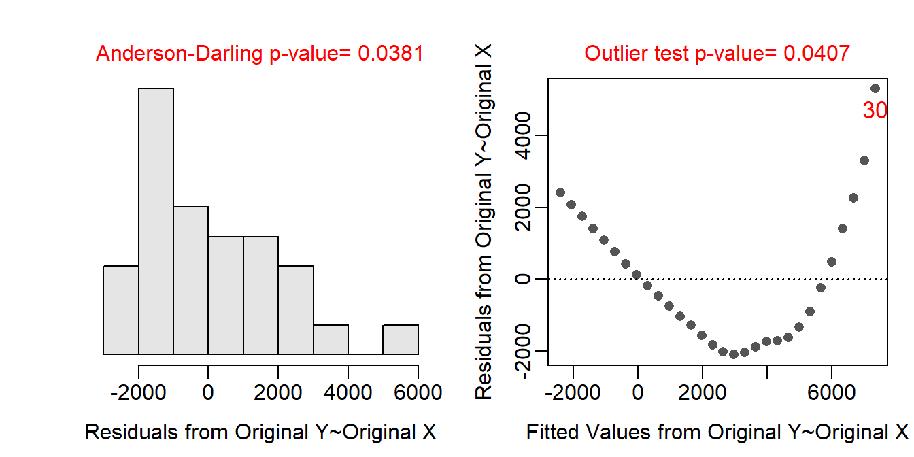
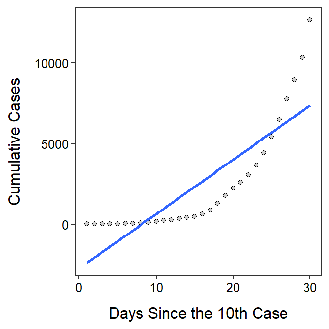

The form of the relationship appears to be linear and homoscedastic as there is no obvious curvature or funnel (or cone) shape to the residual plot (shown below). The residuals appear to be normal (Anderson-Darling p=0.3240; histogram not strongly skewed) and there are no obvious outliers (p=0.6659) or influential points (residual plot below).
I would be concerned about independence if (a) birds were sampled multiple times, (b) birds came from the same brood or general breeding area, or (c) birds tended to flock together based on size. There is no indication that all birds were sampled more than once (e.g., there is no ID variable in the data), it is unlikely that all birds came from the same brood or breeding area, and there is no indication that birds flocked together as the data shows that multiple (and only a few) birds were captured on only a few days. Thus, I don’t see any obvious dependency between birds.
wfc <- read.csv("https://raw.githubusercontent.com/droglenc/NCData/master/Flycatcher.csv")
lm.wfc <- lm(winglen~date,data=wfc)
assumptionCheck(lm.wfc)
ggplot(data=wfc,mapping=aes(x=date,y=winglen)) +
geom_point(pch=21,color="black",fill="lightgray") +
labs(x="Date Since 1-Jan",y="Wing Length (mm)") +
theme_NCStats() +
geom_smooth(method="lm",se=FALSE)`geom_smooth()` using formula 'y ~ x'
The form of the relationship appears to be non-linear and possibly heteroscedastic as there is a clear curve evident in the residual plot (shown below) and a possible funneling, though that is difficult to see because of the curvature. The residuals do not appear to be normal (Anderson-Darling p=0.0029 and the histogram is moderately strongly right-skewed) and there is an apparently outlier (p=0.0012) at a large predicted frequency. I suspect that the outlier is related to the non-linear form.
There is little evidence in the background on which to base an assessment of independence. However, the data indicates that individual snakes were used (there is a variable that appears to be a snake identification code) and were not recorded multiple times. As long as all of the snakes are not related familialy then the independence assumption is likely adequately met.
rs <- read.csv("https://raw.githubusercontent.com/droglenc/NCData/master/Rattlesnakes.csv")
lm.rs <- lm(freq~weight,data=rs)
assumptionCheck(lm.rs)
ggplot(data=rs,mapping=aes(x=weight,y=freq)) +
geom_point(pch=21,color="black",fill="lightgray") +
labs(x="Body Weight (g)",y="Rattle Frequency (hz)") +
theme_NCStats() +
geom_smooth(method="lm",se=FALSE)`geom_smooth()` using formula 'y ~ x'
The form of the relationship is clearly non-linear as there is a clear strong curve evident in the residual plot (shown below). The data look homoscedastic around the curve, though that is difficult to see because of the curvature. The residuals do not appear to be normal (Anderson-Darling p=0.0381 and the histogram is moderately strongly right-skewed) and there is an apparent outlier (p=0.0407) at a large predicted cumulative number of cases. I suspect that the outlier is related to the non-linear form.
Independence is clearly in question here because cumulative number of cases on one day is surely related to the number of cases prior to it. However, this is partly what the analysis is about – to see how cumulative case increase through time – so it is likely OK to proceed.
cv <- read.csv("https://derekogle.com/NCMTH207/modules/ce/data/CovidUK.csv")
lm.cv <- lm(Cum_Cases~Days_Since_10,data=cv)
assumptionCheck(lm.cv)
ggplot(data=cv,mapping=aes(x=Days_Since_10,y=Cum_Cases)) +
geom_point(pch=21,color="black",fill="lightgray") +
labs(x="Days Since the 10th Case",y="Cumulative Cases") +
theme_NCStats() +
geom_smooth(method="lm",se=FALSE)`geom_smooth()` using formula 'y ~ x'